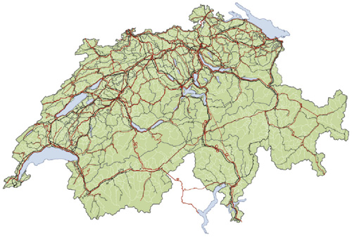
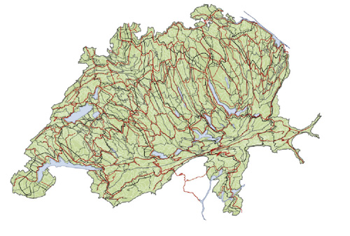

II - The other layers
Scape Toad can take into account other layers referenced in the same projection system as the one chosen for the main transformation layer. There are two ways in which you can include these layers in the transformation process:
- they can follow the transformation of the main layer
- they can limit the transformation of the main layer
1 - Simultaneous transformation
Wizard step 4, option Layers to transform...

The transformation of the main layer (for which a statistical variable has been chosen) will drag along
the features of one or more layer, be they constituted of points, lines (e.g. a transportation network) or zones.
An example of simultaneous transformation:

Superposition of the initial layers: topographic metric of commune partioning and of the transportation network.

Layer superposition after transformation: commune population cartogram with simultaneous transformation of the transportation network.2 - The limited transformation
Wizard step 4, option Constrained transformation...

One or more layers can restrict space transformation in order to preserve some topographical features. Please note that transformation prevails on feature conservation as far as required by the selected statistical variable.